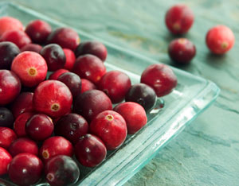

Courting The Cranberry
Science restores an old medicine, as studies show that regular consumption of cranberry juice cocktail decreased the frequency of urinary tract infection. Cranberries may also have broad-spectrum antibiotic value against E. coli and other harmful bacteria, and they are an excellent source of vitamins A and C and potassium.
By Bruce Burnett
April/May 2001
By the 1960s, when doctors were dispensing antibiotics like candy, the use of cranberries to counteract urinary tract infections (UTIs) had fallen out of favor. Researchers claimed that tests showed that the acidifying effect of cranberries and cranberry juice was inadequate to prevent infection.
However, as late as 1994, a Harvard University study involving 153 elderly women with repeated UTIs showed that regular consumption of cranberry juice cocktail decreased the frequency of infections. Recently, in a clinical trial yet to be published from Weber State university in Utah, a concentrated cranberry product in dehydrated, capsule form (equivalent to 12 to 16 6-ounce glasses of cranberry juice a day) was found to be equally effective. Some health professionals recommend the capsules over cranberry juice because of the sugar content of cranberry cocktail and the unpalatable taste of the unsweetened juice.
For many years it was believed that cranberries prevented or cured UTIs by acidifying the urine, thus creating an inhospitable environment for the Escherichia coli (E. coli) bacteria usually responsible for UTIs. However, a benchmark study by a team of scientists at Rutgers State University, published in the New England Journal of Medicine on Oct. 6, 1998, disclosed that condensed tannins, called proanthocyanidins, are the compounds in cranberries responsible for preventing and treating UTIs. They work not by making the urine more acid, but by preventing the bacteria from binding to the wall of the urinary tract. This inability to adhere renders the bacteria harmless. The researchers used a process called bioassay-directed fractiona tion to isolate the compounds, a process that took almost five years to complete.
In addition to its principal role in combating UTIs, researchers are finding that cranberries may also have broad-spectrum antibiotic value against E. coli and other harmful bacteria. In a study conducted at the University of California at Irvine, two batches of soy broth, one with cranberry juice concentrate and one without, were incubated for a 24-hour period. According to the research letter published in The Journal of the American Medical Association, the broth containing the cranberry juice showed a significantly lower growth of bacteria than the one without.
Dentists in Israel report that cranberries and cranberry juice contain specific compounds that can block the formation of dental plaque and potentially lessen tooth decay and gum disease. Test tube research at the University of Wisconsin indicates that cranberry juice may help keep LDL cholesterol (the bad type of cholesterol) from oxidizing. If this is true, it means that the consumption of cranberries or cranberry juice will help prevent the buildup of cholesterol plaque in arteries, the major cause of heart disease and stroke.
Cranberries are an excellent source of vitamins A and C and potassium. Although cranberry juice contains some tannins, it will not interfere with the absorption of minerals. Furthermore, cranberry juice consumption appears to enhance the absorption of vitamin B12, which is good news for older people with too little stomach acid, or those taking acid suppressors, who may find that their ability to absorb the vitamin impaired.
Recommended Dosage
Health professionals recommend one capsule or tablet of a concentrated cranberry juice extract (400 mg) two to four times per day. Two to three large (16 oz) glasses of cranberry juice may also be taken, but avoid the highly sugared cranberry “cocktails.” It’s difficult to drink too much cranberry juice. The only contraindication is that diarrhea may develop with a very high consumption, such as 3 to 4 liters per day.
|
 ISTOCKPHOTO/KELLY CLINE Research from the University of Wisconsin indicates that cranberry juice may help prevent the buildup of cholesterol plaque in arteries, which is the major cause of heart disease and stroke. |
 RICK WETHERBEE |
BRUCE BURNETT |